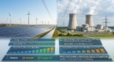
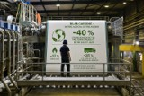
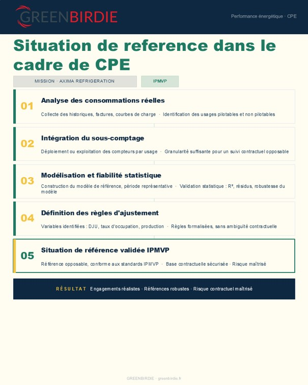
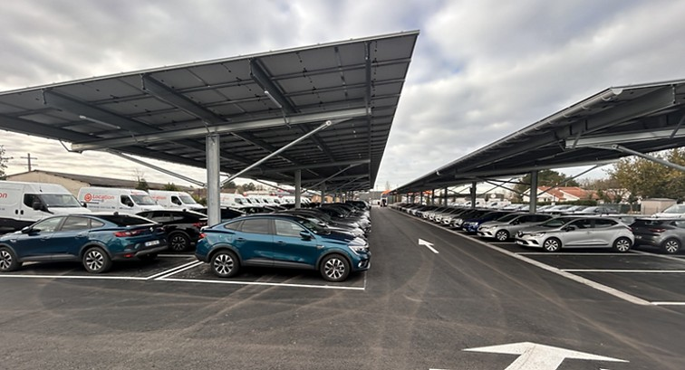
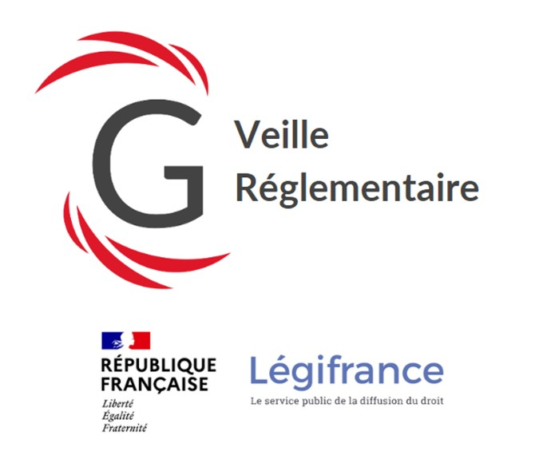
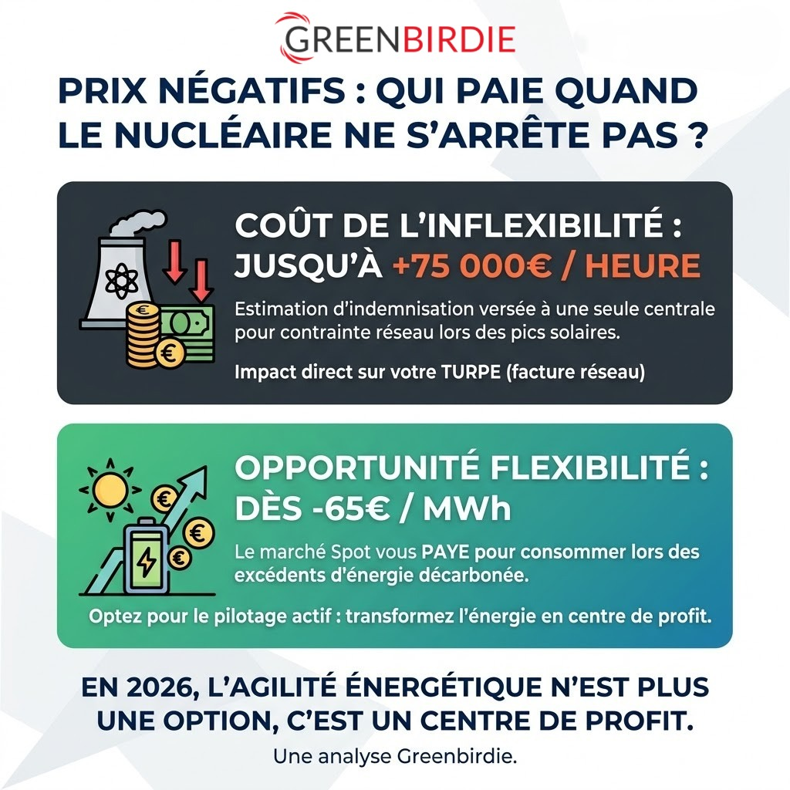

Nos publications
10 articles

PPE3 : ce que la Chine, les États-Unis et la Russie nous apprennent sur notre stratégie énergétique
La PPE3 publiée au JO le 12 février 2026 fixe le cap de la France jusqu'en 2035. Mais pour la comprendre vraiment, il faut sortir de France. 1 GW nucléaire = 6 GW solaire : le chiffre qui devrait structurer tous les débats.

Accélérer la décarbonation industrielle : du diagnostic à l'action chez Hinojosa France
–40 % d'émissions directes par tonne produite en trois ans. Le cas Hinojosa Packaging illustre comment passer du plan carbone aux projets techniques concrets : mesurer, prioriser, agir.

CPE : sécuriser la situation de référence avant de garantir les économies
Dans un Contrat de Performance Énergétique, les économies ne sont jamais absolues — elles se mesurent par rapport à une baseline. Si celle-ci est fragile, tout le contrat est contestable. Analyse méthodologique.

Ombrières photovoltaïques : un projet de 423 kWc au service d'une vision globale
Au-delà des 423 kWc installés, ce projet illustre le passage d'une logique site par site à la gestion d'un portefeuille énergétique. Les ombrières parking : un actif stratégique encore sous-estimé.

Autoconsommation et décret tertiaire : une fausse bonne idée de l'exclure ?
La DGEC s'interroge sur l'intégration de l'autoconsommation dans les objectifs du Décret Tertiaire. Sur le papier, la distinction est claire. Dans la réalité, beaucoup moins. Analyse d'un débat révélateur.
Printemps de la Planète : ce que révèle vraiment la transition écologique
Le 15 avril 2026 à Boulogne-Billancourt, industriels, énergéticiens, financiers et experts du numérique autour de la même table. La transition est engagée — mais elle avance de manière désynchronisée selon les secteurs.

Flexibilité implicite, flexibilité explicite : deux logiques à distinguer
Derrière le mot « flexibilité » se cachent deux réalités très différentes. L'une optimise la facture. L'autre génère des revenus. Ne pas les distinguer, c'est piloter sur des bases incomplètes.

Loi APER : cinq lectures réglementaires, quatre fois plus d'arbres
Un même parking de 1 500 places, cinq méthodes d'interprétation légitimes : de 90 à 350 arbres requis selon la lecture retenue. Analyse des divergences et grille de sécurisation pour les porteurs de projet.

Prix négatifs : qui paie quand le nucléaire ne s'arrête pas ?
Depuis plusieurs semaines, les épisodes de prix spot négatifs se multiplient en France. Le récit dominant pointe les renouvelables. Il est incomplet. Analyse de l'accord RTE–EDF approuvé par la CRE.
GREENBIRDIE Nantes : de nouveaux bureaux pour accompagner notre développement
L'agence nantaise de GREENBIRDIE s'installe dans de nouveaux locaux en duplex, plus spacieux et mieux adaptés à l'évolution de nos équipes. Un espace pensé pour le confort et les échanges.